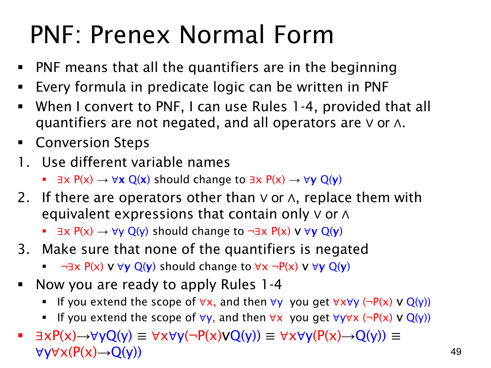

L1.2 · 第 49 页讲解原文
查看这一页课件

前束范式 PNF：把量词整理到公式开头
PNF（Prenex Normal Form，前束范式）指所有量词都集中在公式最前面，后面接不含量词的主体。课件说明，一阶谓词逻辑的公式可通过等价变形写成这种形式。目标是保持原意，不能只是把量词从原位置机械搬到前面。
课件用 ∃xP(x)→∀xQ(x) 展示步骤。两个量词原本各有作用域，先把第二个绑定变量重命名为 y，避免移位时混淆：
(∃xP(x))→(∀yQ(y)).
再消去外层蕴含，用 A→B≡¬A∨B，并把否定穿过量词：
(∃xP(x))→(∀yQ(y))≡¬∃xP(x)∨∀yQ(y)≡(∀x¬P(x))∨(∀yQ(y)).
现在两边通过“或”相连，且量词前没有否定。因为 y 不在 ¬P(x) 中自由出现、x 不在 Q(y) 中自由出现，在课件默认的非空论域下可以用前几页的作用域规则，把量词依次扩展到整式：
(∀x¬P(x))∨(∀yQ(y))≡∀x∀y(¬P(x)∨Q(y)).
主体还可写回 P(x)→Q(y)，得到 ∀x∀y(P(x)→Q(y))。这两个量词同为全称，故也可换成 ∀y∀x(P(x)→Q(y))。本例的准备步骤依次是重命名绑定变量、消去非“且/或”的连接词、把否定推过量词、再扩大作用域。若一开始就移量词，可能发生变量捕获或把原来的否定位置读错。